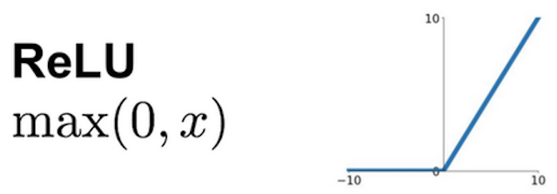

Les réseaux de neurones à convolution (CNN)
Ecole Nationale Supérieure de Cognitique

Sommaire
- Principe de fonctionnement
- Histoire des CNN
- Mise en oeuvre avec Keras
Principe de fonctionnement
Justification
Le monde visuel se caractérise par :
- Une invariance par translation
- Des relations hiérarchiques de type tout/partie
Les modèles classiques sont incapables de détecter des patterns locaux dans une image.
Architecture générale

Extrait du cours d'introduction au Machine Learning de Google
L’opération de convolution
Application d’un filtre ou kernel à des données pour produire un résultat (feature map).
Application du filtre


Paramètres
- Dimension : celle du filtre (2D pour les images).
- Taille du filtre : le plus souvent 3x3 ou 5x5.
- Nombre de filtres : détermine le nombre de feature maps produites par la convolution.
- Stride : pas utilisé pour faire glisser le filtre. Le plus souvent 1.
- Padding : ajout de zéros autour des données pour conserver leur dimension en sortie.

Convolution sur les images
- Une image possède plusieurs canaux de couleur.
- Nombre de canaux = profondeur du filtre.


Fonction d’activation
Permet d’introduire de la non-linéarité dans le modèle.

L’opération de pooling
- Réduction de la dimensionnalité des feature maps.
- Le plus souvent par sélection des valeurs maximales (max pooling).


Pooling avec filtre 2x2 et stride de 2 sur 10 feature maps de 32x32
Entraînement d’un CNN
Même principe que pour un réseau dense : rétropropagation + descente de gradient
Interprétation
- Couches de convolution = extracteurs de caractéristiques de plus en plus abstraites.
- Couches denses = exploitation de ces caractéristiques.
Pooling avec filtre 2x2 et stride de 2 sur 10 feature maps de 32x32
Visualizing convnet layers on MNIST

Histoire des CNN
Les prémisses: LeNet5 (1993)

L’avènement : ILSVRC
- ImageNet Large Scale Visual Recognition Challenge
- Compétition de classification d’images basée sur le dataset ImageNet.

AlexNet (2012)
Entraîné sur 2 GPU pendant 5 à 6 jours.


VGG (2014)

GoogLeNet/Inception (2014)
- 9 modules Inception, plus de 100 couches au total.
- Entraîné sur plusieurs GPU pendant environ une semaine.

Microsoft ResNet (2015)
- 152 couches
- Entraîné sur 8 GPU pendant 2 à 3 semaines.
- Taux d’erreur inférieur à celui d’un humain moyen.


Mise en oeuvre avec Keras
Couche Conv2D
Convolution spatiale pour les images.
- Entrée : tenseur 4D
(batch_size, rows, cols, channels) - Sortie : tenseur 4D
(batch_size, new_rows, new_cols, filters)
# Add a Conv2D layer to a model
# 64: number of filters
# (3, 3): size of the convolution kernel (2D convolution window)
# See https://keras.io/layers/convolutional/ for API details
model.add(Conv2D(64, (3, 3), activation='relu'))
Couche MaxPooling2D
Pooling pour les données spatiales.
- Entrée : tenseur 4D
(batch_size, rows, cols, channels) - Sortie : tenseur 4D
(batch_size, pooled_rows, pooled_cols, channels)
# Add a MaxPooling2D layer to a model
# (2, 2): factors by which to downscale (vertical, horizontal)
# See https://keras.io/layers/convolutional/ for API details
model.add(MaxPooling2D((2, 2)))
Couche Flatten
“Aplatit” un tenseur en une matrice. Souvent utilisée en entrée d’une couche dense.
- Entrée : tenseur de dimension >= 2
- Sortie : tenseur 2D
# Output shape: (None, 3, 3, 64)
model.add(Conv2D(64, (3, 3), activation='relu'))
# Add a Flatten layer to a model
# Output shape: (None, 576)
model.add(Flatten())
# Output shape: (None, 64)
model.add(Dense(64, activation='relu'))
ImageDataGenerator
Génère des lots de tenseurs images avec possibilité de data augmentation en temps réel.
train_datagen = ImageDataGenerator(
rescale=1./255,
shear_range=0.2,
zoom_range=0.2,
horizontal_flip=True)
train_generator = train_datagen.flow_from_directory(
'data/train',
target_size=(150, 150),
batch_size=32,
class_mode='binary')
model.fit_generator(
train_generator,
steps_per_epoch=2000,
epochs=50)